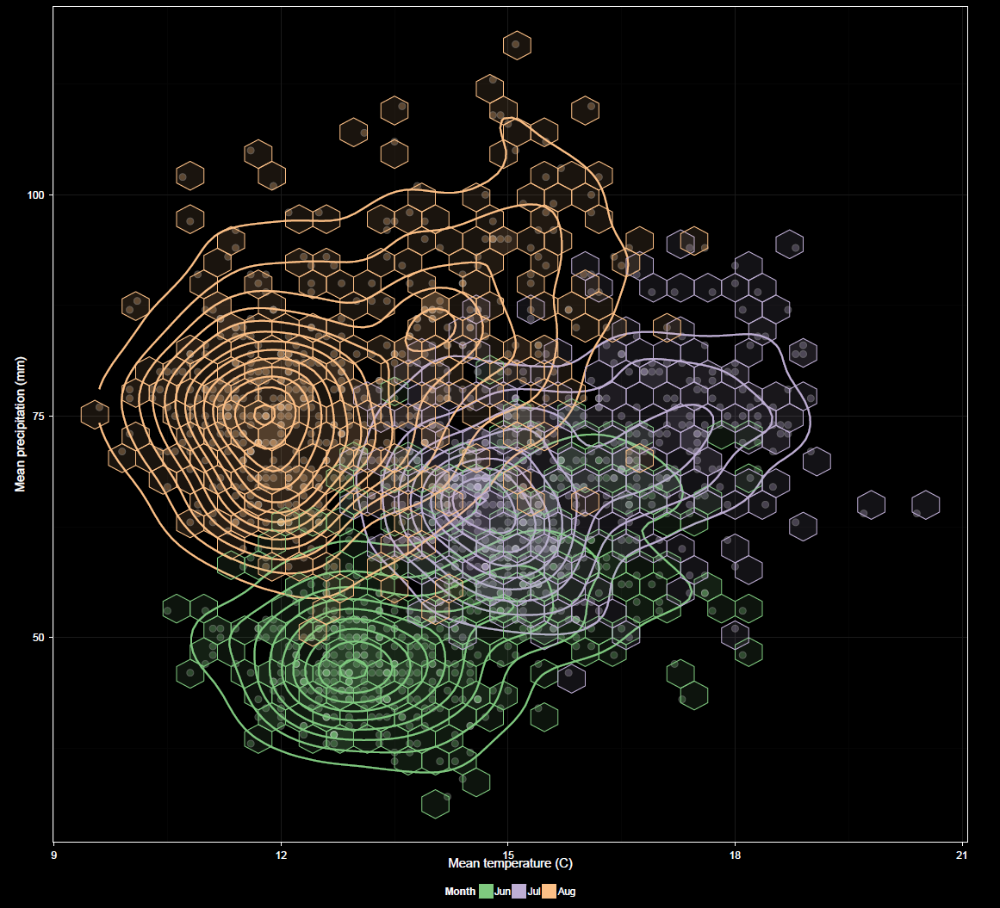

The scatter plot is the only bivariate plot in the app. Currently it plots temperature vs. precipitation.

Axis orientation, currently temperature vs. precipitation or vice versa. Both variables to be plotted are chosen during data selection and default to X and Y, respectively but can be swapped here.
This is similar to grouping for other plots, but applies to both variables. Grouping is restricted to factors common to both variables.
This is similar to faceting for other plots, but applies to both variables. Faceting is restricted to factors common to both variables.
The Show CRU 3.2 option overlays CRU in the same manner as in the time series plots. For the scatter plot, Show lines refers to contour lines. Hex bins are also available for the scatter plot. These can assist in visualizing patterns. Their opacity is based on the amount of data underlying the bins, though this is at a fixed level for CRU data overlays for which varying opacity does not apply.
Other options are similar to those found in other plots. Log transformations can be applied to X and/or Y variables.